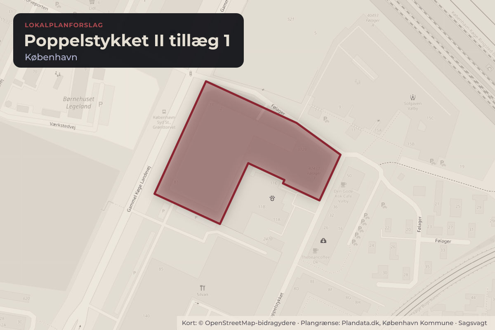
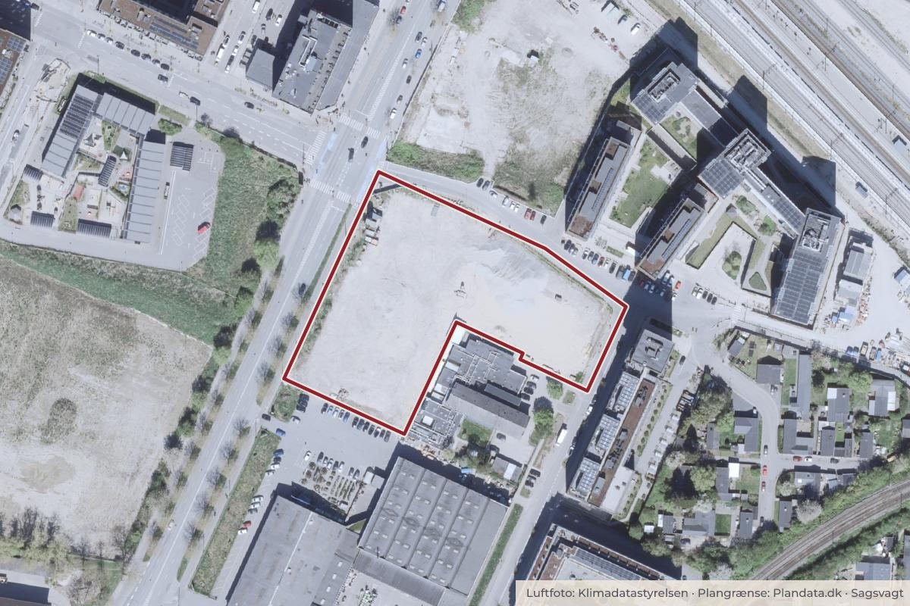

Besluttet 28. september, Klima-, Miljø- og Teknikudvalget
Endelig vedtagelse af lokalplan Poppelstykket II tillæg 1, Valby

Kort: © OpenStreetMap-bidragydere. Plangrænse: Plandata.dk, København Kommune.

Kort fortalt
- Hvem
- Klima-, Miljø- og TeknikudvalgetGår videre til Økonomiudvalget og Borgerrepræsentationen
- Hvornår
- Mandag 28. september 2026
- Status
- Besluttet. Indstillingen blev anbefalet over for Økonomiudvalget og Borgerrepræsentationen uden afstemning.Beslutningen er forkortet her. Læs hele beslutningen
- Næste skridt
- Når Borgerrepræsentationen har vedtaget lokalplanen, bekendtgør Klima-, Miljø- og Teknikforvaltningen denne i henhold til reglerne i planloven.
Er noget forkert her? Skriv til os
Sagens vej
- 28. septemberKlima-, Miljø- og TeknikudvalgetAnbefalet
- 27. oktoberØkonomiudvalgetBesluttet
- 5. novemberBorgerrepræsentationenBehandlet
Læs hele sagen Kommunens egen tekst
Indstilling
Klima-,
Miljø- og Teknikforvaltningen indstiller, at Klima-, Miljø- og Teknikudvalget
over for Økonomiudvalget og Borgerrepræsentationen anbefaler,
• at
godkende lokalplan Poppelstykket II tillæg 1 (bilag 2).
Problemstilling
FB
gruppen har søgt om
tilladelse til at ændre anvendelsen på en ejendom på Følager 2, da de ønsker at
tilføje muligheden for dagligvarebutik i stueetagen. Anvendelsen af stueetagen
er i gældende lokalplan udlagt til udvalgsvarebutik. Lokalplanområdet ligger
ca. 200-300 m fra metro- og S-togsstationen København Syd og er dermed
stationsnært beliggende.
Den
eksisterende lokalplan Poppelstykket II muliggjorde et byggeriet i syv etager,
som er ved at blive opført, med ungdomsboliger, familieboliger, hotel og
butikker samt andre udadvendte anvendelser i stueetagen. Kommuneplan 2024 giver
mulighed for såvel dagligvare som udvalgsvare.
Borgerrepræsentationen
delegerede den 19. juni 2025 kompetencen til at sende forslag til lokalplaner
(kategori 1-3) i offentlig høring til Klima-, Miljø- og Teknikforvaltningen.
Forslaget til lokalplantillæg Poppelstykket II er omfattet af denne delegation
og har derfor ikke tidligere været politisk behandlet.
Løsning
Bygherres ønske om en anvendelsesændring ligger indenfor
mulighederne i Kommuneplan 2024. Anvendelsen kan ikke rummes inden for
den eksisterende lokalplans anvendelsesbestemmelser, og det er derfor nødvendigt
at udarbejde et tillæg til lokalplanen.
Kvarteret omkring lokalplanområdet er med Torveporten, Københavns
Syd, Strømmen og Valby Idrætspark stadig under udvikling.
Forslag
til ændringer af lokalplanforslaget
Høringen har ikke givet anledning til ændringer af
lokalplanforslaget
Høring
Lokalplanforslaget
har været i høring fra den 22. juni til den 9. august 2026. Forvaltningen har
modtaget syv høringssvar. Høringen har ikke givet anledning til ændringer. De
syv modtagne henvendelser i høringsperioden vedlægges som bilag 3. I
bilag 4 er henvendelserne refereret med forvaltningens bemærkninger.
Borgernes hovedsynspunkter i høringen er anført nedenfor.
Valby
Lokaludvalg har følgende hovedsynspunkter (bilag 3, henvendelse nr. 1):
• Valby
Lokaludvalg ønsker ikke flere dagligvarebutikker i området, da de mener
der er mange i forvejen. Lokaludvalgets synspunkter er sammenfaldende med
to borgeres henvendelser. Derudover har Valby Lokaludvalgs
borgerpanel tilkendegivet at de savner elektronikbutikker i Valby.
Forvaltningens
bemærkninger
• Forvaltningen
bemærker, at lokalplanen fortsat muliggør udvalgsvarebutik og at der i
lokalplantillægget muliggøres dagligvarebutik. Der er desuden et generelt
behov for dagligvarebutikker i området. Lokalplanen følger Kommuneplan
2024, hvor der kan etableres til dagligvare- og udvalgsvarebutikker.
Hovedsynspunkter
i borgernes henvendelser
• Fire
henvendelser anser det for positivt, at der muliggøres dagligvarebutik, da
der opleves mangel på dagligvarebutikker. En enkelt henvendelse bemærker
at dagligvarebutikker har en positiv effekt på passagerers vilje til at gå
længere for en station.
Forvaltningens
bemærkninger
• Forvaltningen
tager de positive henvendelser til efterretning.
Politisk
handlerum
Det kan
besluttes ikke at vedtage tillæg 1 til lokalplan Poppelstykket II. Dermed
fastholdes den eksisterende anvendelse af stueetagen, og bygherres ønske om at
muliggøre dagligvarebutik imødekommes ikke.
Økonomi
Denne
indstilling har ikke i sig selv økonomiske konsekvenser for Københavns Kommune.
Videre proces
Når
Borgerrepræsentationen har vedtaget lokalplanen, bekendtgør Klima-, Miljø- og
Teknikforvaltningen denne i henhold til reglerne i planloven.
Beslutning
Indstillingen blev anbefalet over for Økonomiudvalget og Borgerrepræsentationen uden afstemning.
Det Konservative Folkeparti og Liberal Alliance afgav følgende protokolbemærkning:
”Det bør ikke være kommunen, der afgør, om københavnerne har brug for endnu et supermarked eller hellere vil have en elektronikbutik. Når begge dele kan rummes planmæssigt, bør vi give ejeren friheden til at vælge og lade kunderne afgøre, hvilke butikker der er grundlag for.”
Bilag
- Bilag 1 Overblik over den politiske behandling
- Bilag 2 Forslag til lokalplan Poppelstykket II tillæg 1
- Bilag 3 Høringssvar modtaget i høringsperioden
- Bilag 4 Svar på henvendelser i høringsperioden
Kilde: Københavns Kommune, Klima-, Miljø- og Teknikudvalget, referat fra mødet mandag 28. september 2026, punkt 8. Læs den originale sag hos kommunen.
Steder i sagen: Poppelstykket · Følager